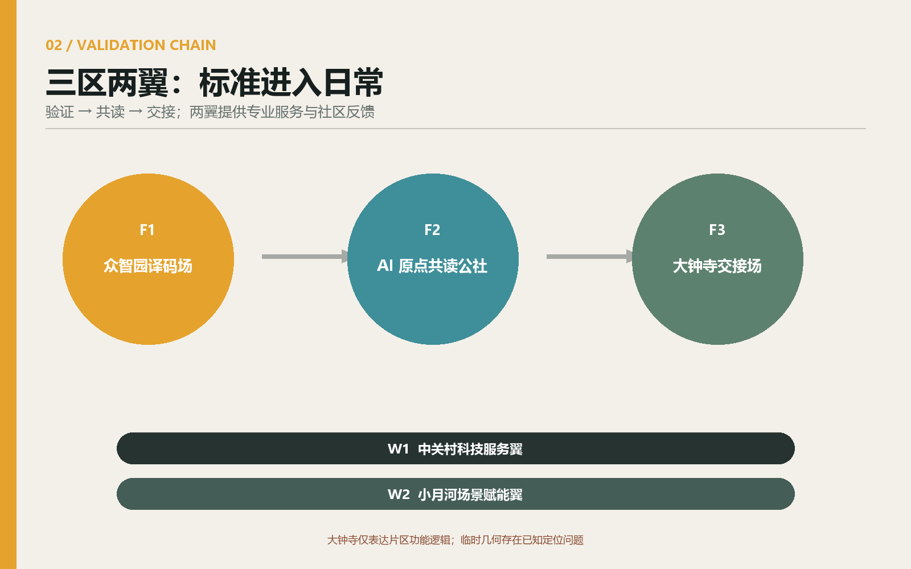
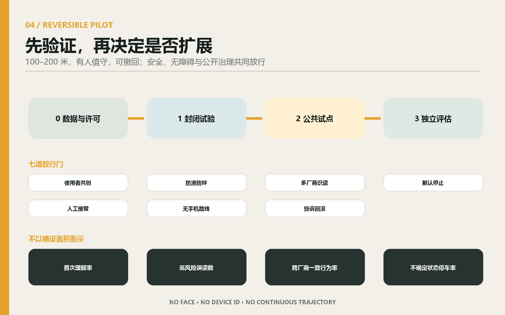
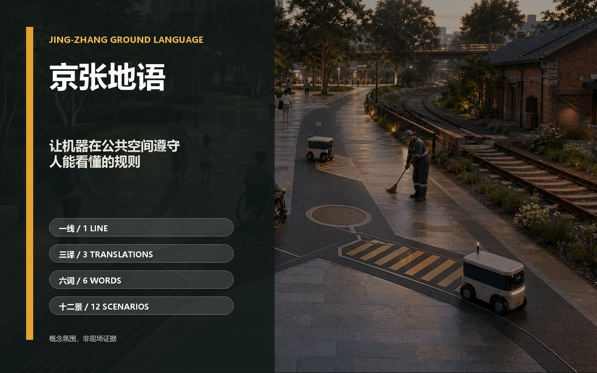

00 / PUBLIC COVENANT
不是机器专用道，
是共同读得懂的规则
一套开放、被动、无身份的公共地面语言，使普通行人、无障碍使用者、维护人员和不同厂商机器人共同理解六种状态。机器不确定时停下，人永远优先。
6开放词汇
3翻译层
12使用场景
100–200m可撤回试点

01 / OPEN GRAMMAR
六词构成最小公共语法
G1行
沿此连续方向通行；不表达优先权。
- 视觉
- 双轨之间的一条连续开放线。
- 触觉
- 候选连续浅肋，仅在与盲道无混淆后使用。
- 机器
- 方向向量、版本和校验位，不含目的地或身份。
G2让
机器和服务流程在此把通行权交还给人。
- 视觉
- 向内收束后打开的缺口。
- 触觉
- 候选断续横肋，必须避开法定警示铺装语义。
- 机器
- 强制减速—停车—确认净空的公共状态。
G3界
这里是不可越过或需人工确认的边界。
- 视觉
- 双线加封闭端帽。
- 触觉
- 候选平滑—粗糙转换带，不形成绊倒高差。
- 机器
- 禁止越界或仅授权监督测试。
G4泊
短时停靠、装卸或交接应收纳在此，不占连续通行净空。
- 视觉
- 朝通行线外侧打开的口袋。
- 触觉
- 候选边缘节律提示，轮椅可平顺跨越。
- 机器
- 停靠编号、允许状态和最大占用时段，不含收件人信息。
G5援
任何人可在此获得不依赖手机的人工帮助或报告问题。
- 视觉
- 开放括号包围一个空心点。
- 触觉
- 候选短触感环与固定扶靠面相邻。
- 机器
- 只广播帮助点类别和开放状态，不采集求助者身份。
G6改
前方规则、路线或设施处于临时变化；先读现场替代信息。
- 视觉
- 错位枕木与醒目的版本角标。
- 触觉
- 候选可拆式短节律，仅在替代路线完整后铺设。
- 机器
- 版本、有效期和替代状态；过期或冲突即无效。
02 / EVERYDAY RELEASE GATES
十二个场景，由八类使用者共同放行
- S1多厂商共同读码
- S2天气与遮挡试验
- S3人机互相理解试验
- S4站点最后十米
- S5盲杖共读
- S6轮椅与婴儿车过渡
- S7无身份配送交接
- S8维护巡检
- S9施工与应急改道
- S10京张文化译码
- S11无应用市集与公共服务
- S12社区纠错与版本召回
前三个场景验证跨厂商识读、天气遮挡和人机互相理解；任何公共试点都必须保留无手机路径、人工接管和公开回滚。
03 / REVERSIBLE PILOT
先验证，再决定是否扩展

04 / EVIDENCE INDEX
总览地图与可审查证据

- 总览地图
- 三层范围
- 重点区域
- 用地分区
- 交通慢行
- 蓝绿公共空间
- 建筑
- 更新项目
- AI 场景
- 核心指标
- 任务覆盖
- 自检状态
- 来源
- 假设
11,412,825.386 m²临时总体边界复算面积
12.3423%概念分析绿地叠层
7.3281%概念分析公共空间叠层
以上三项仅用于脚手架几何一致性复核，不是现状测量、法定控制或实施承诺。建筑层为低可信占位；容积率未知。完整来源见 sources.json，完整假设见 assumptions.json，自检状态见 self_check.json，任务覆盖见 compliance_matrix.json。
机器可以更新，公共原则不能静默改写。
人优先、无身份可用、失败可见、责任可追溯。若试验失败，地面恢复；若试验成功，成果以开放版本和采购中立条款进入下一阶段。